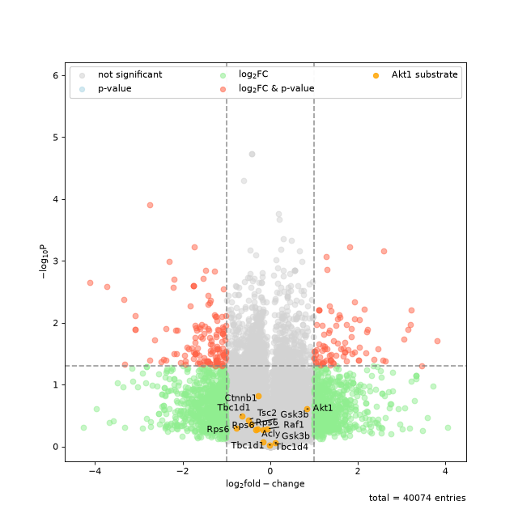
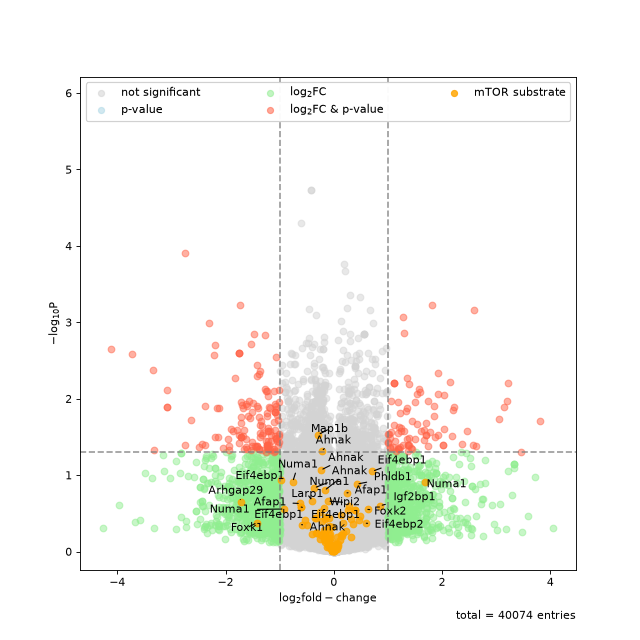

Functional Annotation#
Autoprot Analysis Functions.
@author: Wignand, Julian, Johannes
@documentation: Julian
- class autoprot.analysis.functional.KSEA(data: DataFrame)[source]#
Perform kinase substrate enrichment analysis.
Notes
KSEA uses the Kinase-substrate dataset and the regulatory-sites dataset from https://www.phosphosite.org/staticDownloads
Examples
KSEA is a method to get insights on which kinases are active in a given phosphoproteomic dataset. This is a great method to gain deeper insights on the underlying signaling mechanisms and also to generate novel hypothesis and find new connections in signaling processes. The KSEA class allows you to easily perform the analysis and comes with helpful functions to visualize and interpret your results.
In the first step of the analysis you have to generate a KSEA object.
Next, you can annotate the data with respective kinases. You can provide the function with a organism of your choice as well as toggle whether to screen for only in vivo determined substrate phosphorylation of the respective kinases.
After the annotation it is always a good idea to get an overview of the kinases in the data and how many substrates they have. Based on this you might want to adjust a cutoff specifying the minimum number of substrates per kinase.
Next, you can perform the actual kinase substrate enrichment analysis. The analysis is based on the log fold change of your data. Therefore, you have to provide the function with the appropiate column of your data and the minimum number of substrates per kinase.
After the ksea has finished, you can get information for further analysis such as the substrates of a specific kinase (or a list of kinases) or a new dataframe with additional columns for every kinase showing if the protein is a substrate of that kinase or not.
Eventually, you can also generate plots of the enrichment analysis.
phos = pd.read_csv("../data/Phospho (STY)Sites_minimal.zip", sep="\t", low_memory=False) phos = pp.cleaning(phos, file = "Phospho (STY)") phosRatio = phos.filter(regex="^Ratio .\/.( | normalized )R.___").columns phos = pp.log(phos, phosRatio, base=2) phos = pp.filter_loc_prob(phos, thresh=.75) phosRatio = phos.filter(regex="log2_Ratio .\/.( | normalized )R.___").columns phos = pp.remove_non_quant(phos, phosRatio) phosRatio = phos.filter(regex="log2_Ratio .\/. normalized R.___").columns phos_expanded = pp.expand_site_table(phos, phosRatio) twitchVsmild = ['log2_Ratio H/M normalized R1','log2_Ratio M/L normalized R2','log2_Ratio H/M normalized R3', 'log2_Ratio H/L normalized R4','log2_Ratio H/M normalized R5','log2_Ratio M/L normalized R6'] twitchVsctrl = ["log2_Ratio H/L normalized R1","log2_Ratio H/M normalized R2","log2_Ratio H/L normalized R3", "log2_Ratio M/L normalized R4", "log2_Ratio H/L normalized R5","log2_Ratio H/M normalized R6"] phos = ana.ttest(df=phos_expanded, reps=twitchVsmild, cond="_TvM") phos = ana.ttest(df=phos_expanded, reps=twitchVsctrl, cond="_TvC") ksea = ana.KSEA(phos) ksea.annotate(organism="mouse", only_in_vivo=True) ksea.get_kinase_overview(kois=["Akt1","MKK4", "P38A", "Erk1"]) ksea.ksea(col="logFC_TvC", min_subs=5) ksea.plot_enrichment(up_col="salmon")
You can also highlight a list of kinases in volcano plots. This is based on the autoprot volcano function. You can pass all the common parameters to this function.
ksea.plot_volcano(log_fc="logFC_TvC", p_colname="pValue_TvC", kinases=["Akt1", "mTOR"], annotate_colname="Gene names")


Sometimes the enrichment is crowded by various kinase isoforms. In such cases it makes sense to simplify the annotation by grouping those isoforms together.
simplify = {"ERK":["ERK1","ERK2"], "GSK3":["GSK3A", "GSK3B"], "AMPKA":["AMPKA1","AMPKA2"]} ksea.ksea(col="logFC_TvC", min_subs=5, simplify=simplify) ksea.plot_enrichment()
Of course, you can also get the ksea results as a dataframe to save or to further customize.
ksea.return_enrichment()
Of course is the database not exhaustive, and you might want to add additional substrates manually. This can be done the following way. Manually added substrates are always added irrespective of the species used for the annotation.
ksea = ana.KSEA(phos) genes = ["RPGR"] modRsds = ["S564"] kinases = ["mTOR"] ksea.add_substrate(kinases=kinases, substrates=genes, sub_mod_rsd=modRsds)
- add_substrate(kinases: list, substrates: list, sub_mod_rsd: list) None[source]#
Manually add a substrate to the database.
- Parameters:
kinases (list of str) – Name of the kinases e.g. PAK2.
substrates (list of str) – Name of the substrate e.g. Prkd1.
sub_mod_rsd (list of str) – Phosphorylated residues e.g. S203.
- Raises:
ValueError – If the three provided lists do not match in length.
- Return type:
None.
- annotate(organism: str = 'human', only_in_vivo: bool = False) None[source]#
Annotate with known kinase substrate pairs.
- Parameters:
organism (str, optional) – The target organism. The default is “human”.
only_in_vivo (bool, optional) – Whether to restrict analysis to in vivo evidence. The default is False.
Notes
Manually added kinases will be included in the annotation search independent of the setting of organism and onInVivo.
- Return type:
None.
- annotate_df(kinases: list[str] | None = None) DataFrame[source]#
Annotate the provided dataframe with boolean columns for given kinases.
- Parameters:
kinases (list of str or None, optional) – List of kinases. The default is None.
- Returns:
annotated dataframe containing a column for each provided kinase with boolean values representing a row/protein being a kinase substrate or not.
- Return type:
pd.DataFrame
- get_kinase_overview(kois: list[str] | None = None) None[source]#
Plot a graphical overview of the kinases acting on the proteins in the dataset.
- Parameters:
kois (list of str, optional) – Kinases of interest for which a detailed overview of substrate numbers is plotted. The default is None.
- Return type:
None.
- ksea(col: str, min_subs: int = 5, simplify: Literal['auto'] | Dict | None = None) None[source]#
Calculate Kinase Enrichment Score.
- Parameters:
col (str) – Column used for the analysis containing the kinase substrate enrichments.
min_subs (int, optional) – Minimum number of substrates a kinase must have to be considered. The default is 5.
simplify (None, "auto" or dict, optional) – Merge multiple kinases during analysis. Using “auto” a predefined set of kinase isoforms is merged. If provided with a dict, the dict has to contain a list of kinases to merge as values and the name of the merged kinases as key. The default is None.
Notes
The enrichment score is calculated as
\[\frac{(\langle FC_{kinase} \rangle - \langle FC_{all} \rangle)\sqrt{N_{kinase}}}{\sigma_{all}}\]i.e. the difference in mean fold change between kinase and all substrates multiplied by the square root of number of kinase substrates and divided by the standard deviation of the fold change of all substrates (see [1]).
References
[1] https://academic.oup.com/bioinformatics/article/33/21/3489/3892392
- Return type:
None.
- plot_enrichment(up_col: str = 'orange', down_col: str = 'blue', bg_col: str = 'lightgray', plot_bg: bool = True, ret_fig: bool = False, title: str = '', figsize: tuple[int, int] = (5, 10), ax: Axes = None) None | Figure[source]#
Plot the KSEA results.
- Parameters:
up_col (str, optional) – Color for enriched/upregulated kinases. The default is “orange”.
down_col (str, optional) – Colour for deriched/downregulated kinases. The default is “blue”.
bg_col (str, optional) – Colour for kinases that did not change significantly. The default is “lightgray”.
plot_bg (bool, optional) – Whether to plot the unaffected kinases. The default is True.
ret_fig (bool, optional) – Whether to return the figure object. The default is False.
title (str, optional) – Title of the figure. The default is “”.
figsize (tuple of int, optional) – Figure size. The default is (5,10).
ax (matplotlib.axis, optional) – The axis to plot on. Default is None.
- Returns:
fig – Only returned in ret is True.
- Return type:
matplotlib figure.
- plot_volcano(log_fc: str, p_colname: str, kinases: list[str] | None = None, ret_fig: bool = False, **kwargs) None | list[source]#
Plot volcano plots highlighting substrates of a given kinase.
- Parameters:
log_fc (str) – Column name of column containing the log fold changes. Must be present in the dataframe KSEA was initialised with.
p_colname (str) – Column name of column containing the p values. Must be present in the dataframe KSEA was initialised with.
kinases (list of str, optional) – Limit the analysis to these kinases. The default is [].
ret_fig (bool) – Whether to return a list of figures for every kinase.
**kwargs – passed to autoprot.visualisation.volcano.
- Returns:
volcano_returns – list of all returned figure objects. Only if ret_fig is True.
- Return type:
list
- return_kinase_substrate(kinase: str | list[str]) DataFrame[source]#
Return new dataframe with substrates of one or multiple kinase(s).
- Parameters:
kinase (str or list of str) – Kinase(s) to analyse.
- Raises:
ValueError – If kinase is neither list of str nor str.
- Returns:
df_filter – Dataframe containing detailed information on kinase-substrate pairs including reference literature.
- Return type:
pd.Dataframe
{kind=link}
{kind=link}
{kind=link}
{kind=link}
- autoprot.analysis.functional.go_analysis(gene_list: list[str], organism: str = 'hsapiens', background: list[str] | str | None = None, significance_threshold_method: Literal['g_SCS', 'bonferroni', 'fdr'] = 'bonferroni', **kwargs) List[Dict[str, Any]][source]#
Perform go Enrichment analysis (also KEGG and REAC).
- Parameters:
gene_list (list of str) – list of gene names.
organism (str, optional) – identifier for the organism. See https://biit.cs.ut.ee/gprofiler/page/organism-list for details. The default is “hsapiens”.
background (list of str or None, optional) – Gene set against which the enrichment is calculated.
significance_threshold_method (One of "g_SCS"|"bonferroni"|"fdr".) – The method to correct for multiple testing. Default is “bonferroni”. See https://biit.cs.ut.ee/gprofiler/page/docs#significance_threhshold.
arguments (keyword) – Passed to GProfiler.profile. See https://biit.cs.ut.ee/gprofiler
- Raises:
ValueError – If the input could not be parsed as list of gene names.
- Returns:
Dataframe-like object with the GO annotations.
- Return type:
gp.profile
Examples
>>> ana.go_analysis(['PEX14', 'PEX18']).iloc[:3,:3] source native name 0 CORUM CORUM:1984 PEX14 homodimer complex 1 GO:CC GO:1990429 peroxisomal importomer complex 2 GO:BP GO:0036250 peroxisome transport along microtubule